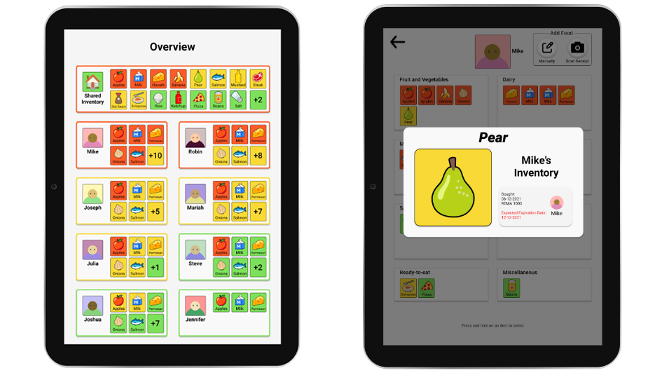
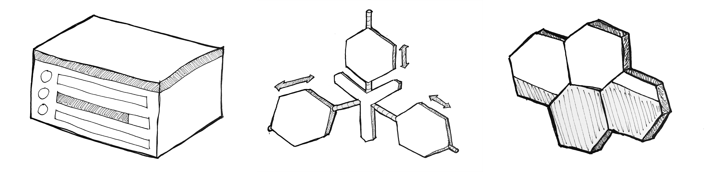

Portfolio
Here are some of the highlights from my projects at Aalborg University.

This was my Master Thesis and it was done in collaboration with NRGi. The goal was to design an app to empower users save money and lessen their environmental impact by helping them shift their electricity usage.
Pre-project
This project built upon a pre-project in which extensive we conducted user research on energy conservation as a whole before limiting our focus to shifting for the master thesis. The pre-project consisted of two participatory workshops, the first of which being an inspiration card workshop in which the participants helped generate ideas and concepts for us to explore. After this workshop we created three design alternatives in Figma.

The second workshop consisted of discussing and
redesigning these design alternatives with partipants.

Master Thesis
This project was focused on understanding the practice of
shifting using practice theory and participatory design and
how this could be used to inform a design which could affect
this practice.
First we created a Figma prototype to be used in a deployment
test. This prototype provided the user with information about
the electricity price throughout the day and the costs of
running different appliances.

The participants for the deployment test was tasked with using
this "app" for a week and interviews were conducted before and
after this period.
To further our understanding a participatory workshop was
conducted. In this workshop participants genereated ideas and
used printed UI-elements to design a user interface for an
app.

This was used to inform the final design, which not only provides the same information as the deployment prototype but also the user's average price which acts as feedback about the user's shifting performance.


Study Space Locator
This was my bachelor's project it was done in collaboration with Aalborg Univeristy Library (AUB). AUB were preparing to open a new and complex library building and were concerned that the students would find it overwhelmingly difficult to find a study space as these were scattered around the building.
The developed concept is an interactive digital map that helps users of Aalborg University Library identify and navigate to available study spaces. The system provides users with a system that shows all study spaces along with their availability and characteristics. The system lets users filter the study spaces according to their needs. After selecting a study space, the system generates a route to it, which users can bring with them.


Process
The system was designed using an iterative workflow following the Double Diamond model. This entailed analyzing the problem, generating ideas with an ideation phase, and afterwards building, testing and refining prototypes iteratively.
The process included:
- Generating personas to represent potential users
- Root cause analysis
- Ideation
- Exploring alternatives
- Creating, testing, and refining prototypes

Pantree
It can be difficult to keep track of the available food items when living in a shared household. For this project we attempted to solve this issue by providing a platform which can be used to get an overview of the available food items.
Pantree allows users to scan their receipts from grocery shopping to upload them to the system. When in the system the other residents in the household can see the items as well as an estimated expiry date
Items in the system can be tagged with an icon which users can assert meaning to such as: "Free-to-use" or "Reserved"
Process
As part of this project we conducted two participatory design workshops with participants from shared households. These workshops included a group interview and an inspiration card ideation session where the participants combine inspiration cards to come up with potential design concepts.
The results from the interview and inspiration card session were analyzed using affinity diagramming and were used to guide the design process
For the design process we took an iterative approach starting with paper prototypes and increasing the fidelity until we arrived at the final prototype which was created in Figma

Habit@
The goal for this project was to create physical product which helps people develop desired habits. To achieve this goal we based the design on research about how habits are formed, maintained, and destroyed.
Habit@ is a system which consists of a physical module and an accompanying app. When the user wishes to start a habit (such as reading 30 minutes a day) they press the button on top which starts a circular LED timer around the button and turns on an ambient light at the bottom of the module. This ambient light functions as a context cue to remind the user to keep working on their habit for the desired amount of time. Using the app the user can track their progress and manage their device.
Process
Before arriving at the final design, multiple alternative were explored. This included different input and output modalities, physical forms, materials, and context cues.
Further testing was done using paper models to refine the size, shape, and dimensions of the module.

The final design was 3D printed and assembled. An Arduino was used to apply functionality to the prototype.

Beetle
Proin gravida nibh vel velit auctor aliquet. Aenean sollicitudin, lorem quis bibendum auctor, nisi elit consequat ipsum, nec sagittis sem nibh id elit.

Lighthouse
Proin gravida nibh vel velit auctor aliquet. Aenean sollicitudin, lorem quis bibendum auctor, nisi elit consequat ipsum, nec sagittis sem nibh id elit.